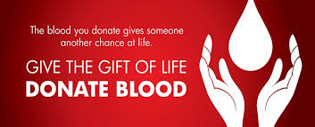
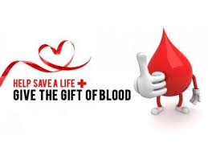

Blood Connect
Blood Donation Camp
Blood cannot be manufactured in factories; it can only come from generous donors. To cater to this demand, BloodConnect was launched on 1st April, 2010 (as
a project under NSS IIT Delhi) with an unparalleled o
bjective of solving the problem of blood shortage in India.According to WHO data, India faces a shortage of 3 million blood units. This shortage can easily be eliminated if only an additional 2% of India's youth donates blood. To make this possible, BloodConnect acts as a channel connecting voluntary blood donors with those who need blood. It is a youth-run organization and provides free help and specially works to target the poor and the needy.
Since its inception,
the organization has grown a lot in terms of working for this cause. BloodConnect has developed a 360 degree solution
to the problem
of blood shortage. The model revolves around 4 focal points:
Started just with a blood helpline, BloodConnect now provides a 360 degree solution to the problem of blood shortage in the country!
- UNITING YOUTH : started in 2010 we are compleatly youth red
these three year we hav exapand from a team 5 toa team of 100+ youth covering overing 4 years.
- ORGANAZING CAMPS : organization blood donation camps in one of your core activity all our camps
focus to giving the blood the best experience
- RUNNING HELPLINE : we run a 24*7,365 days helpliine to help those who need blood urgently ,
if you need a support reised a blood request here. we will try or lavel best to help you !
- SAVING LIVES : we work a sole objactive of saving lives we act as a channel connecting volantry donars with those who need blood.
Till now we hwlp to save the 20,000 lives!
How to organize a blood donation camp?

I. Selecting an area for blood donation:
A minimum of 75 to 100 people should be in the organization/institute that you plan to organize a blood donation camp. Some of the places you can try are:
- Colleges/Institutes
- Corporate organizations/companies
- Religious organizations
- Banks
- Markets/malls
- Factories
II. Booking a date for the camp
Once you have identified the location, contact Mrs. Sonu Singh, Manager-Camp Operations at 9810406172 to book a date for the camp.
Email Id : sonu.singh@rotarybloodbank.org
III. Requirements at the camp site
A well ventilated, well lit venue: Covered area of 400-500 square feet connected by lift to carry equipment. Air-conditioned in the interest of the donor.
Housekeeping/helpers to carry equipment to camp site
Drinking water arrangement at the camp site.
Arrangement of tea/lunch, if possible, for the medical team.
Tables and Chairs
Table 1: Registration/Pre-donation counseling
Table 2: Pre-donation screening for Hb
Table 3: Medical exam by doctor to ascertain fitness for donation.
Table 4: Refreshments
Table 5: Certificates and post donation advice.
Table 6: To keep blood bags after collection/sealing etc.
In case the camp is inside the Blood Mobile, provision of table/chair is required for registration only
Rotary Blood Bank provides motivation material that can be used prior to a camp.
We orgnised the following camps in PUNE
blood camps
volunteer
be a volunteer
Login or Create a new account
or
!! Thank for Visiting the website !!